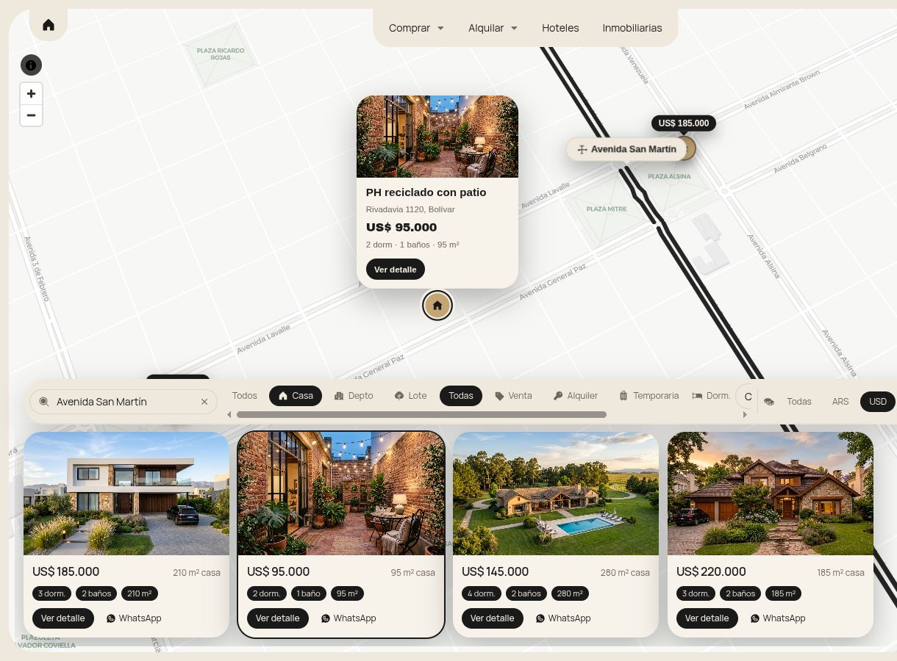
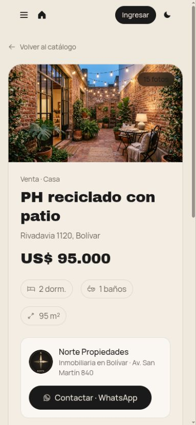
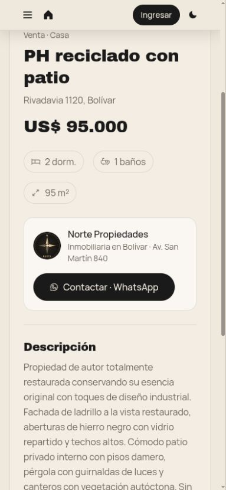
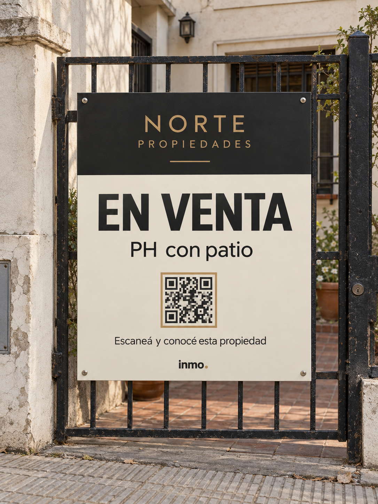
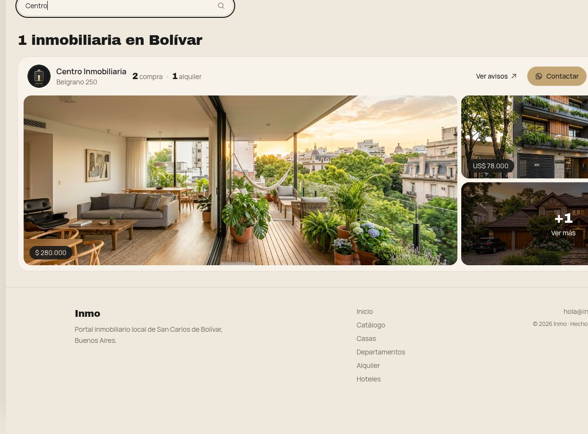

La información está dispersa
Cada inmobiliaria publica en sus propios canales. Para ver todo, hay que saber de antemano cuáles existen.
UNA PLATAFORMA LOCAL
Una plataforma local que reúne la oferta de las inmobiliarias de la ciudad y lleva cada consulta directo al profesional responsable.

Quien quiere comprar o alquilar tiene que armar el mapa por su cuenta, canal por canal e inmobiliaria por inmobiliaria.
Cada inmobiliaria publica en sus propios canales. Para ver todo, hay que saber de antemano cuáles existen.
No se puede buscar por precio, zona o ambientes en un solo lugar, ni comparar opciones.
Una propiedad disponible hace meses puede no llegar a la persona que la busca.
Propiedades ya vendidas o alquiladas siguen circulando como si estuvieran disponibles.
EL PUNTO DE ENCUENTRO
La oferta existe.
Falta conectarla.
Una plataforma web para usar desde el celular o la computadora, sin descargar nada. Funciona sobre cinco ideas:
Casas, departamentos, terrenos, campos, locales y quintas de todas las inmobiliarias, con filtros.
Recorrer la ciudad y ver qué hay disponible en cada zona.
Fotos, videos, ubicación, precio, características y profesional responsable.
Perfil propio con logo, contacto y todas sus propiedades.
WhatsApp, teléfono o formulario con la inmobiliaria. La operación sigue siendo suya.

La pregunta cambia de “¿qué inmobiliaria tendrá algo en esa zona?” a “¿qué hay disponible en esa zona?”.

Elegir tipo, operación, moneda y dormitorios para acotar la oferta.
Buscar una calle y reconocer su recorrido en el mapa.
Ver precio, superficie e información principal de cada aviso.
Se toca un punto en el mapa y se abre la propiedad completa.
El alcance se ampliará durante el desarrollo con más categorías y filtros.
Desde la ficha, el interesado encuentra la información y contacta a la inmobiliaria responsable.


La propiedad reúne fotos, ubicación, precio y características en una sola ficha.
El contacto abre el canal de la inmobiliaria. La atención y la operación siguen siendo suyas.
La plataforma acerca la consulta; el profesional asesora, negocia y cierra.
Capturas reales de la aplicación · información de demostración.
Nuestro equipo realiza la carga inicial con el material de cada inmobiliaria. Después, un panel propio permite mantener la oferta al día.
CARGA INICIAL ASISTIDA
La inmobiliaria aporta y valida fotos, precios y datos. Inmo acompaña la preparación y publicación inicial.
Incorporar propiedades
Actualizar información
Ocultar un aviso
Vendida o alquilada
ENTENDER QUÉ GENERA CADA PUBLICACIÓN
Alcance de las propiedades.
Interés en cada aviso.
Aperturas del canal de atención.
Seguimiento de los contactos.
Panel y métricas previstos en la propuesta; todavía no implementados. A futuro, estadísticas agregadas del mercado local sin exponer datos privados.
Un QR en el cartel lleva a la ficha: fotos, precio, características y contacto con la inmobiliaria.

UNA ENTRADA MÁS A LA PLATAFORMA
El cartel resuelve el primer interés. Dentro de la plataforma, el vecino también puede explorar otras propiedades.
El QR definitivo se vinculará a la ficha pública al lanzar la plataforma.
La plataforma trabaja para llevar el cliente a la inmobiliaria. Cada profesional conserva su marca y el contacto directo.

La inmobiliariaMás exposición y nuevos clientes; tráfico propio, estadísticas, QR para carteles y perfil profesional.
El Centro de MartillerosPuede participar en criterios de identificación profesional, datos mínimos, buenas prácticas y actualización de la oferta.
Un distintivo para identificar al profesional responsable de cada publicación, con criterios de verificación acordados.
Su implementación queda sujeta a la participación formal y validación del Centro de Martilleros.Un piloto de 60 días, sin costo, con 4 a 6 inmobiliarias de Bolívar.
Presentar el proyecto, escuchar a los profesionales y definir estándares.
Seleccionar de 4 a 6 inmobiliarias y preparar su catálogo con carga asistida.
60 días sin costo para probar publicaciones, QR y recepción de consultas.
Usuarios, visitas, consultas, clics a inmobiliarias, uso del buscador y feedback.
Después del piloto,
un modelo sustentable.
Coordinemos la presentación y definamos juntos el grupo piloto.
60 días sin costoPrueba y evaluación con 4 a 6 inmobiliarias.
Sin comisión por operaciónLa relación comercial queda en manos del profesional.
Equipo local y carga asistidaAcompañamiento para la puesta en marcha.
COORDINEMOS UNA REUNIÓN
11 7062-3866matiasasin123@gmail.comMatías Asin · Manuel Alejandro García · Augusto Natiello
Empezamos por Bolívar. Después de validar la herramienta, podremos extenderla a otras localidades.